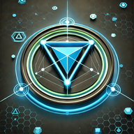

🚀 Avoimen Lähdekoodin Projektit
Turvallisuuden parhaat käytännöt tuotantosovelluksissa
Hack23:ssa emme vain puhu turvallisuudesta—todistamme sen avoimen lähdekoodin projekteilla, jotka esittelevät tosielämän turvallisuusvalvonnan, compliance-kehysten ja DevSecOps-käytäntöjen toteutusta. Jokainen projekti saavuttaa SLSA Level 3 toimitusketjun turvallisuuden ja ylläpitää aktiivista turvallisuuden valvontaa.
🌟 Valikoidut Projektit

🥋 Black Trigram (흑괘)
Lippulaiva Koulutuspeliprojekti
Realistinen 3D-tarkkuustaistelusimulaattori perinteisistä korealaisista kamppailulajeista inspiroituneena. Sisältää 70 anatomista elintärkeää pistettä, 5 erillistä taistelijaarkkityyppiä ja aitoja taistelutekniikkoja koulutusarvolla ja kulttuurisen säilyttämisen fokuksella.
Avainominaisuudet:
- 70 Anatomista Elintärkeää Pistettä
- 5 Ainutlaatuista Taistelija-arkkityyppiä
- Korealaiset Kamppailulajitekniikat
- Fysiikkapohjainen Taistelu
- Koulutuksellinen Peli
- Kulttuurinen Aitous
🔐 CIA Compliance Manager
Yritysturvallisuuden Arviointialusta
Kattava turvallisuuden arviointialusta luottamuksellisuuden, eheyden ja saatavuuden (CIA-kolmikko) arviointiin liiketoiminnan vaikutusanalyysillä ja vaatimustenmukaisuuden mappauksen NIST:n, ISO 27001:n, GDPR:n, HIPAA:n, SOC2:n ja CRA-kehysten kanssa.
Avainominaisuudet:
- CIA-kolmikon Arviointi
- Liiketoiminnan Vaikutusanalyysi
- Monihallintakehyksen Mappaus
- Uhkamallinnus (STRIDE)
- Todisteiden Kerääminen
- Vaatimustenmukaisuusraportointi
🔍 Citizen Intelligence Agency
Poliittinen Läpinäkyvyysalusta
Avoimen lähdekoodin tiedustelu (OSINT) alusta poliittiseen läpinäkyvyyteen Ruotsissa. Seuraa parlamentaarista toimintaa, äänestysrekistereitä ja poliittista käyttäytymistä dataohjatuilla oivalluksilla, analytiikkadashboardeilla ja vastuullisuusmittareilla.
Avainominaisuudet:
- Parlamentaarinen Seuranta
- Äänestysrekisterianalyysi
- Poliittinen Analytiikka
- Datan Visualisointi
- Vastuullisuusmittarit
- Avoimen Datan Integrointi
🏛️ EU Parliament Monitor
European Parliament Intelligence Platform
Open-source European Parliament Intelligence Platform monitoring political activity at the EU level with systematic transparency. Comprehensive tracking of MEPs, plenary sessions, committees, legislative documents, and voting records.
Key Features:
- MEP Monitoring
- Plenary Session Tracking
- Committee Monitoring
- Legislative Document Search
- Voting Records Analysis
- MCP Server AI Integration
🏛️ Parlamentaarisen Läpinäkyvyyden Työkalut

🏛️ European Parliament MCP Server
Tekoälypohjainen Parlamentaarinen Tietojen Käyttö
Model Context Protocol (MCP) server joka tarjoaa tekoälyavustajille jäsennellyn pääsyn Euroopan parlamentin avoimiin tietoaineistoihin. Mahdollistaa tekoälytyökalujen kyselyt MEP-tiedoista, täysistunnoista, valiokunnista, äänestyksistä ja lainsäädäntöasiakirjoista reaaliajassa.
Tärkeimmät Ominaisuudet:
- MCP-protokollaintegraatio
- MEP-tietojen käyttö
- Täysistuntokyselyt
- Valiokuntatieto
- Lainsäädäntöasiakirjojen haku
- EU-parlamentin data reaaliajassa
🗳️ Riksdagsmonitor
Ruotsin Riksdagin Tiedusteluplatform
Swedish Parliament monitoring platform joka seuraa lainsäätäjiä, äänestystietoja ja parlamentaarista toimintaa. Tarjoaa datapohjaisia näkemyksiä ruotsalaisista poliittisista prosesseista kattavilla analyyseillä.
Tärkeimmät Ominaisuudet:
- Ruotsin Riksdagin seuranta
- Lainsäätäjien seuranta
- Äänestysten analyysi
- Poliittinen analytiikka
- Vastuumetriikat
- Avoimen datan integraatio
📊 Projektiyhteenveto
| Projekti | Tarkoitus | Teknologia | Tila |
|---|---|---|---|
| Black Trigram | Koulutuksellinen kamppailulajipeli | Unity, C#, Monialustainen | 🟢 Aktiivinen |
| CIA Compliance Manager | Turvallisuusarviointi & compliance | HTML5, JavaScript, PWA | 🟢 Aktiivinen |
| Citizen Intelligence Agency | Poliittinen läpinäkyvyys & valvonta | Java, Vaadin, PostgreSQL | 🟢 Aktiivinen |
| European Parliament MCP Server | Tekoälypääsy EU-parlamentin dataan | TypeScript, Node.js, MCP | 🟢 Aktiivinen |
| Riksdagsmonitor | Ruotsin parlamentin seuranta | HTML5, CSS3, JavaScript | 🟢 Aktiivinen |
| EU Parliament Monitor | EU Parliament transparency & monitoring | HTML5, CSS3, JavaScript | 🟢 Aktiivinen |
| Lambda in Private VPC | Yrityksen pilviarkkitehtuuri | AWS, CloudFormation, Lambda | 🟢 Aktiivinen |
🛠️ Lisäprojektit
☁️ Lambda in Private VPC
Monialueellinen aktiivinen/aktiivinen arkkitehtuuri lähes nollan palautusajalla, DNS-varmistuksella ja AWS Resilience Hub -yhteensopivuudella kriittisille sovelluksille.
Sonar-CloudFormation-Plugin
SonarQube-laajennus AWS CloudFormation -mallien analysointiin turvallisuuden parhain käytännöin NIST-, CWE- ja ISO-standardien pohjalta.
🛡️ Turvallisuus- ja Laatustandardit
🔒 SLSA Level 3
Kaikki lippulaivaprojektit saavuttavat Supply-chain Levels for Software Artifacts (SLSA) Level 3, varmistaen käännöksen eheyden, alkuperän todistuksen ja toistettavat käännökset.
📊 OpenSSF Scorecard
Aktiivinen turvallisuuden valvonta OpenSSF Scorecard -arvioilla kaikilla turvallisuusulottuvuuksilla: riippuvuuksien hallinta, koodin tarkastus, haavoittuvuuksien julkistaminen ja muuta.
✅ CII Best Practices
Projektit saavuttavat CII Best Practices -merkit, osoittaen avoimen lähdekoodin turvallisuus- ja laatustandardien noudattamista.
🎯 Tutustu Projekteihimme
Jokainen projekti osoittaa turvallisuuden parhaiden käytäntöjen, DevSecOps-automaation ja läpinäkyvien kehitysprosessien tosielämän soveltamista.